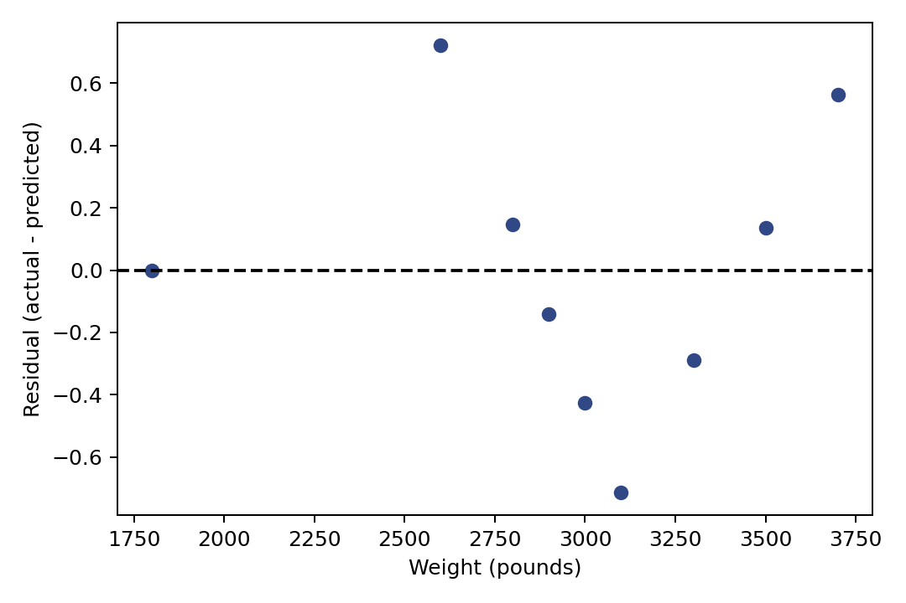

2.3 Python 实验
配套代码目录
第二章 / 2.3 Python 实验 / 代码 2.3.9-13
残差随汽车重量如何变化？
这一块属于连续的 Notebook。请先运行前面的代码块；变量可能依赖前面的定义。全部数据均为教学用虚构数据。
代码 2.3.9-13
复制整块代码
fig, ax = plt.subplots(figsize=(6, 4)) ax.scatter(X_train["weight"], residual_train, color="#314887") ax.axhline(y=0, color="black", linestyle="--") ax.set_xlabel("Weight (pounds)") ax.set_ylabel("Residual (actual - predicted)") fig.tight_layout() fig.savefig(image_dir / "239-residual.pdf") fig.savefig(image_dir / "239-residual.png", dpi=180) display(fig) plt.close(fig)
实际运行图形

下载矢量图
下载完整实验 Notebook
下载本块 Python
上一块
下一块